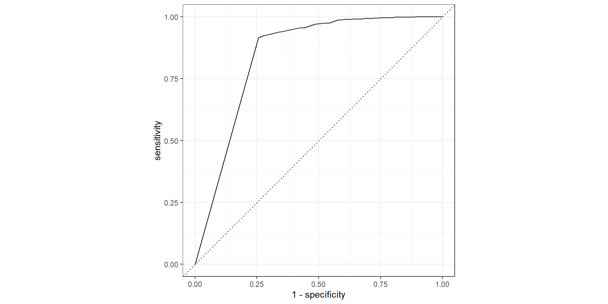
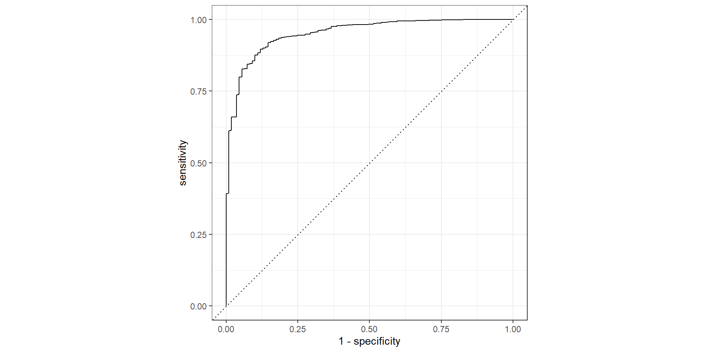

library(tidyverse)
library(broom)
library(tidymodels)
library(gridExtra)
library(ISLR)
library(Stat2Data)
library(discrim)
#install.packages("kknn")
#install.packages("klaR")Chapter 4 Part 3
KMeans, Naive Bayes
Setup
K-Nearest Neighbors
KNN
- In theory we would always like to predict qualitative responses using the Bayes classifier.
- For real data, we do not know the conditional distribution of Y given X, and so computing the Bayes classifier is impossible.
- Many approaches attempt to estimate the conditional distribution of Y given X, and then classify a given observation to the class with highest estimated probability. One such method is the K-nearest neighbors (KNN) classifier.
KNN
Given positive integer \(K\), and a test observation \(x_0\), KNN identifies the \(K\) points in the training data that are closest to \(x_0\), represented by \(\mathcal{N}_0\).
KNN then estimates the conditional probabilities for each class \(j\) as the fraction of the points in \(\mathcal{N}_0\) whose response values equal \(j\):
\[P(Y=j|X=x_0)=\frac{1}{K}\sum_{i\in \mathcal{N}}I(y_i=j)\]
Lastly, KNN classifies \(x_0\) into the class with the largest probability
KNN Example
The KNN approach, using \(K = 3\), is illustrated in a situation with six blue observations and six orange observations.

A test observation, \(x_0\), at which a predicted class label is desired is shown as a black cross.
The three closest points to the test observation are identified, and it is predicted that the test observation belongs to the most commonly-occurring class, in this case blue.
KNN Example
The KNN approach, using \(K = 3\), is illustrated in a situation with six blue observations and six orange observations.

The KNN decision boundary for this example is shown in black. The blue grid indicates the region in which a test observation will be assigned to the blue class, and the orange grid indicates the region in which it will be assigned to the orange class.
KNN Example KNN vs Bayes
The black curve indicates the KNN decision boundary, using \(K = 10\). The Bayes decision boundary is shown as a purple dashed line.
The KNN and Bayes decision boundaries are very similar.

KNN Low and High Flexibility
- Comparison of KNN decision boundaries (solid black curves) obtained using \(K = 1\) and \(K = 100\).
- The \(K = 1\) decision boundary is overly flexible and the \(K = 100\) boundary is not sufficiently flexible.
- The Bayes decision boundary is shown as a purple dashed line.

Statquest
KMeans Classification Tidymodels
KMeans Classification Tidymodels
default_testing <- testing(def_splits)
knn_fit_1 |>
augment(new_data = default_testing) |>
conf_mat(truth = default, estimate = .pred_class) Truth
Prediction No Yes
No 2865 69
Yes 26 40knn_fit_1 |>
augment(new_data = default_testing) |>
accuracy(truth = default,estimate=.pred_class)# A tibble: 1 × 3
.metric .estimator .estimate
<chr> <chr> <dbl>
1 accuracy binary 0.968KMeans ROC Curve
knn_fit_1 |>
augment(new_data = default_testing) |>
roc_curve(truth = default,.pred_No) |>
autoplot()
KMeans ROC AUC
knn_fit_1 |>
augment(new_data = default_testing) |>
roc_auc(truth = default,.pred_No)# A tibble: 1 × 3
.metric .estimator .estimate
<chr> <chr> <dbl>
1 roc_auc binary 0.844Naive Bayes
Naive Bayes
- In LDA and QDA we assumed the predictors were Normal
- This allow us to find the density functions \(f_k(x)\)’s by optimizing a linear or quadratic function \(\delta_k(x)\).
- With LDA, we assume the predictors have the same covariance structure between classes
- With QDA, \(X_j\)s can have any covariance structure
- With both, the predictors must be quantitative
Naive Bayes
- With Naive Bayes we drop the normality assumption but introduce a must stronger assumption
- Within a class \(k\),
- The predictors are independent
Naive Bayes New Assumptions
These two independence assumptions allows us to write, for \(k=1,2,...,K\),
\[f_k(x) = f_{k1}(x)f_{k2}(x)\cdot \cdot \cdot f_{kp}\]
- where \(f_{kj}\) is the density function for the \(j\)th predictor among observations in the \(k\)th class.
Naive Bayes Probability Function
Making these assumption, we now have:
\[P(Y=k|X=x) = \frac{\pi_k\cdot f_{k1}(x_1)\cdot \cdot \cdot f_{kp}(x_p)}{\sum_{l=1}^K\pi_l\cdot f_{l1}(x_1)\cdot \cdot \cdot f_{lp}(x_p)}\] for \(k=1,2,...,K\)
Naive Bayes - Why?
- Each \(f\) is one dimensional!
- If \(X_j\) is quantitative can still assume each \(X_j|Y=k\) is univariate normal
- If \(X_j\) is quantitative, then another option is to use a non-parametric estimate for \(f_{kj}\)
- Make a histogram for the observations of the \(j\)th predictor within each class.
- Then we can estimate \(f_{kj}(x_j)\) as the fraction of the training observations in the \(k\)th class that belong to the same histogram bin as \(x_j\) .
- We can use a kernel density estimator, which is kernel density estimator (essentially a smoothed version of a histogram)
Naive Bayes - Why?
- If \(X_j\) is qualitative, then we can simply count the proportion of training observations for the \(j\)th predictor corresponding to each class.
- Suppose that \(X_j \in \{1, 2, 3\}\), and we have 100 observations in the \(k\)th class.
- Suppose that the \(j\)th predictor takes on values of 1,2, and 3 in 32, 55, and 13 of those observations, respectively. Then we can estimate \(f_{kj}\) as
- \[\hat{f}_{kj}(x_j) = \begin{cases} .32 \quad \text{if }x_j = 1\\ .55 \quad \text{if }x_j = 2\\ .13 \quad \text{if }x_j = 3\\ \end{cases}\]
Naive Bayes - Statsquest
Naive Bayes Tidymodels
Naive Bayes Confusion Matrix
nb_fit_1 |>
augment(new_data = default_testing) |>
conf_mat(truth = default, estimate = .pred_class) Truth
Prediction No Yes
No 2880 76
Yes 11 33Naive Bayes Accuracy
nb_fit_1 |>
augment(new_data = default_testing) |>
accuracy(truth = default,estimate=.pred_class)# A tibble: 1 × 3
.metric .estimator .estimate
<chr> <chr> <dbl>
1 accuracy binary 0.971Naive Bayes ROC Curve
nb_fit_1 |>
augment(new_data = default_testing) |>
roc_curve(truth = default,.pred_No) |>
autoplot()
Naive Bayes ROC AUC
nb_fit_1 |>
augment(new_data = default_testing) |>
roc_auc(truth = default,.pred_No)# A tibble: 1 × 3
.metric .estimator .estimate
<chr> <chr> <dbl>
1 roc_auc binary 0.952Naive Bayes Statquest
Comparing LDA, QDA, and Normal Naive Bayes
Naive Bayes - Given Y, the predictors X are conditionally independent.
LDA - LDA assumes that the covariance matrix across classes is the same.
QDA - QDA does not assume constant covariance matrix across classes.